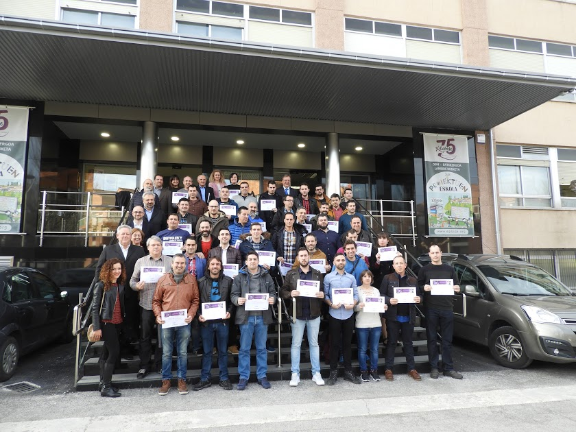

Descripción
Formamos personas conscientes, competentes, compasivas y comprometidas , facilitamos su transición al mundo del trabajo y les acompañamos en su formación a lo largo de toda la vida.
PASADO, PRESENTE Y FUTURO
En la década de los 40 del siglo pasado, un sacerdote diocesano, Pedro Anitua, y un sacerdote jesuita, Demetrio Ruiz de Alburuza, pusieron en marcha dos proyectos educativos con clara vocación social. Hoy en día diríamos que fueron visionarios. Identificaron una necesidad, el progreso de muchos jóvenes sin educación, y dieron una respuesta. Dos escuelas profesionales: Diocesanas (1942) y Jesús Obrero (1945).
Con su identidad cristiana y vocación social como base fundamental de su misión, el apoyo y reconocimiento de Instituciones alavesas –Diputación Foral de Álava, Ayuntamiento de Vitoria-Gasteiz y Fundación Vital (antes Obra Social de la Caja Vital)- fueron claves en el recorrido de ambas instituciones. Finalmente, el reconocimiento como entidades educativas concertadas por parte del Gobierno Vasco les dio el espaldarazo definitivo.
Ambas instituciones llegaron a la segunda década de este siglo como dos reconocidos centros educativos de Secundaria, Bachillerato y Formación Profesional. Ese reconocimiento se fundamentó en su capacidad de formar personas íntegras y profesionales, así como su modo de integrar la educación con el mundo laboral.
Políticas, Reglamentos y Estatutos
En esta sección encontrarás las políticas generales de EGIBIDE aprobadas por el Patronato de la Fundación Diocesanas-Jesús Obrero Fundazioa:
- Política Pedagógica
- Política de Personas
- Política Organizativa y de Gestión
- Política Económica
- Política de Gestión Integrada de EGIBIDE
- Estatutos
- Normas de Convivencia
Ofertas Educativas
mpartimos Educación Secundaria Obligatoria (ESO), Bachillerato y Formación Profesional en 13 familias profesionales diferentes, además de Formación Profesional Básica, Aula de Aprendizaje de Tareas, así como cursos de Formación para el Empleo.
Transporte Escolar
Para poder hacer uso del servicio de transporte escolar es necesario rellenar la inscripción ANTES DEL 17 DE JULIO. Las plazas están garantizadas para quien rellenó la solicitud de transporte antes del del 25 de Junio de 2019. El resto de inscripciones se tendrán en cuenta una vez que queden registradas las plazas libres disponibles.
¿Donde Estamos?
- Arriaga
- C/ Pozoa s/n (01013)
- arriaga@egibide.org
- Jesús Obrero
- C/ Francia,32 (01002)
- jesusobrero@egibide.org
- Mendizorroza
- C/ Plaza Amadeo García Salazar, 2 (01007)
- mendizorrotza@egibide.org
- Molinuevo
- C/ San Ignacio de Loyola, 6 (01001)
- Email: molinuevo@egibide.org